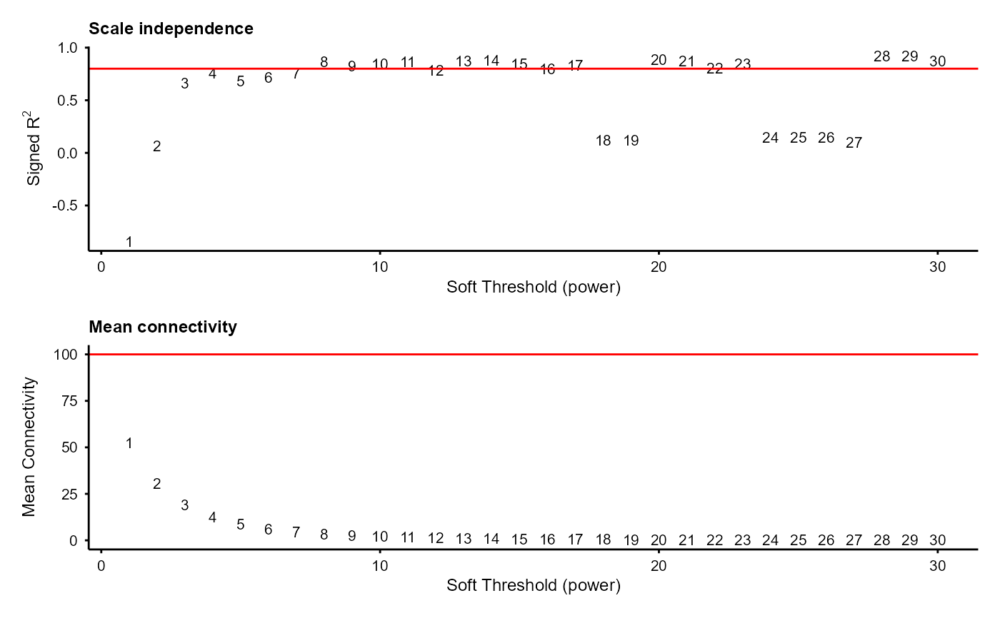

Prepare input data for WGCNA (format, QC), then choose the appropriate soft thresholding power for network construction, by analysing scale free topology with different soft thresholding powers.
Usage
prepare_WGCNA(
se_obj,
assay,
networkType = "signed",
RsquaredCut = 0.8,
MeanConnectivity = 100,
powers = NULL,
fontsize = 8,
...
)Arguments
- se_obj
A SummarizedExperiment object. Data normalised to time point 0 can be in the second assay slot, created by
normalise_to_start(). Features can be pre-filtered, e.g. by residual variance calculated bydecomp_variance(), to remove noisy features before running WGCNA.- assay
The assay to use in the SummarizedExperiment object: a numeric index or character name, e.g. 1 or "orig" for original data, 2 or "norm" for time 0 normalised data. (Required, no default.)
- networkType
Parameter of
WGCNA::pickSoftThreshold()(default is "signed")- RsquaredCut
Parameter of
WGCNA::pickSoftThreshold()(default is 0.8)- MeanConnectivity
Line of mean connectivity (default is 100)
- powers
Parameter of
WGCNA::pickSoftThreshold()(default: NULL, auto-assigned asseq(1, 20))- fontsize
Font size for the plot (default is 8)
- ...
Additional parameters to be passed to
WGCNA::pickSoftThreshold()
Value
A list containing results of the scale-free topology
fit indices with different powers, WGCNA's powerEstimate, a custom
custom_powerEstimate based on the signed scale-free topology fit,
network type, and prepared input data used for reuse in run_WGCNA().
The custom estimate selects the lowest power whose signed scale-free
topology fit exceeds RsquaredCut, consistent with the signed-R-squared
panel in the diagnostic plot.
Examples
data(example_obj)
wgcna_input <- prepare_WGCNA(example_obj, assay = 2, powers = seq(1, 30),
networkType = "signed", RsquaredCut = 0.8)
#> Allowing multi-threading with up to 24 threads.
#> pickSoftThreshold: will use block size 100.
#> pickSoftThreshold: calculating connectivity for given powers...
#> ..working on genes 1 through 100 of 100
#> Power SFT.R.sq slope truncated.R.sq mean.k. median.k. max.k.
#> 1 1 0.8430 3.800 0.9140 52.5000 53.3000 61.000
#> 2 2 0.0646 -0.315 0.1410 30.5000 30.8000 42.500
#> 3 3 0.6650 -1.280 0.5850 19.0000 18.6000 31.600
#> 4 4 0.7580 -1.150 0.8160 12.5000 11.8000 24.500
#> 5 5 0.6820 -1.050 0.7270 8.6000 7.7300 19.500
#> 6 6 0.7190 -1.130 0.7330 6.1400 5.2300 15.900
#> 7 7 0.7580 -1.100 0.8040 4.5100 3.6800 13.100
#> 8 8 0.8680 -1.140 0.9360 3.4000 2.6200 11.000
#> 9 9 0.8240 -1.260 0.8680 2.6200 2.0100 9.350
#> 10 10 0.8460 -1.220 0.8770 2.0600 1.5000 8.000
#> 11 11 0.8670 -1.160 0.8860 1.6400 1.2300 6.900
#> 12 12 0.7820 -1.250 0.7270 1.3200 1.0000 5.990
#> 13 13 0.8750 -1.290 0.8720 1.0800 0.7600 5.240
#> 14 14 0.8790 -1.240 0.8780 0.8940 0.5780 4.610
#> 15 15 0.8480 -1.210 0.8220 0.7450 0.4460 4.080
#> 16 16 0.8010 -1.240 0.7450 0.6270 0.3560 3.620
#> 17 17 0.8350 -1.230 0.7900 0.5310 0.2740 3.240
#> 18 18 0.1200 -1.940 -0.1080 0.4530 0.2120 2.900
#> 19 19 0.1220 -1.870 -0.1070 0.3890 0.1670 2.610
#> 20 20 0.8880 -1.200 0.8590 0.3360 0.1340 2.360
#> 21 21 0.8730 -1.210 0.8370 0.2920 0.1080 2.140
#> 22 22 0.8080 -1.170 0.7550 0.2540 0.0886 1.950
#> 23 23 0.8450 -1.190 0.8030 0.2230 0.0739 1.780
#> 24 24 0.1450 -2.560 -0.0914 0.1960 0.0618 1.620
#> 25 25 0.1460 -2.540 -0.0918 0.1730 0.0512 1.490
#> 26 26 0.1510 -2.540 -0.0875 0.1540 0.0423 1.370
#> 27 27 0.0977 -1.490 -0.0975 0.1370 0.0344 1.260
#> 28 28 0.9180 -1.150 0.8950 0.1220 0.0280 1.160
#> 29 29 0.9220 -1.120 0.9020 0.1090 0.0225 1.080
#> 30 30 0.8760 -1.120 0.8400 0.0979 0.0181 0.999
#> WGCNA powerEstimate: 1 (unsigned SFT.R.sq > 0.8); custom_powerEstimate: 8 (signed R-squared > 0.8).
wgcna_input$plot

picked_power <- wgcna_input$custom_powerEstimate